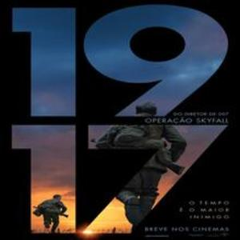

1917
Gênero: drama
Sinopse: Os cabos Schofield (George MacKay) e Blake (Dean-Charles Chapman) são jovens soldados britânicos durante a Primeira Guerra Mundial. Quando eles são encarregados de uma missão aparentemente impossível, os dois precisam atravessar território inimigo, lutando contra o tempo, para entregar uma mensagem que pode salvar cerca de 1600 colegas de batalhão.
Elenco
- George MacKay como cabo lanceiro William "Will" Schofield;
- Dean-Charles Chapman como cabo lanceiro Thomas "Tom" Blake;
- Mark Strong como capitão Smith;
- Andrew Scott como tenente Leslie;